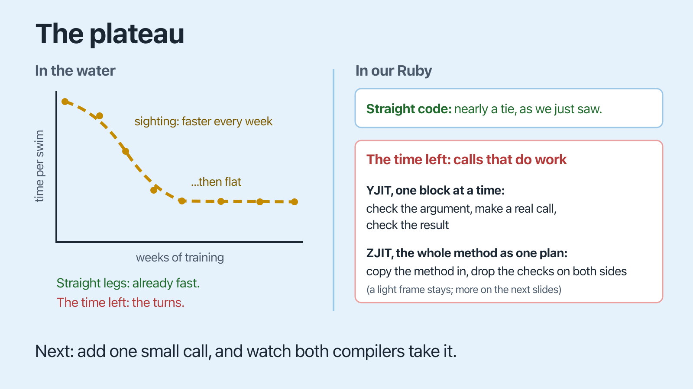
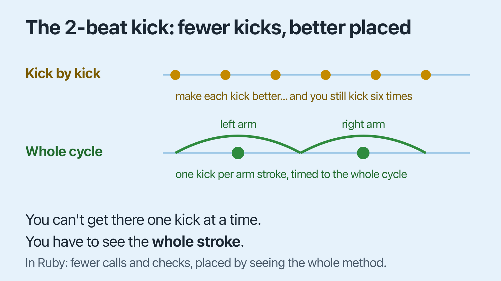
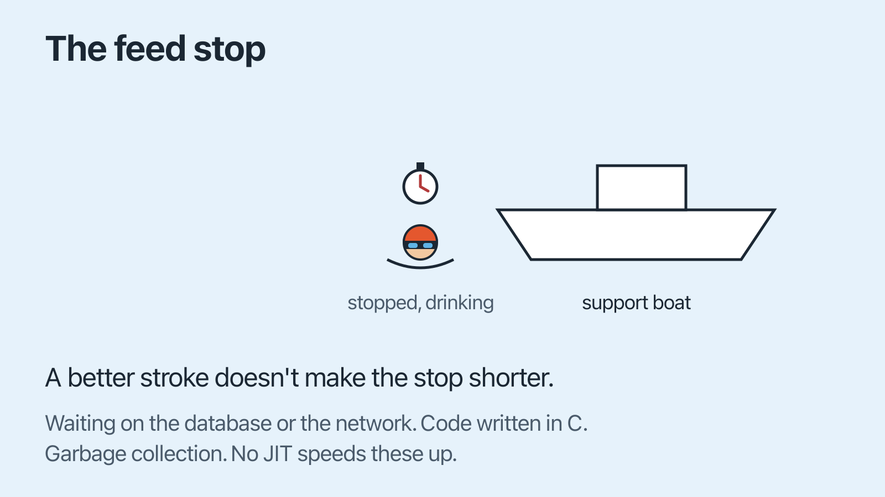

The Ceiling: Why Ruby 4.0 Needed a Second Compiler
Dhruva Sagar · RubyConf 2026
Ruby 4.0 ships two JIT compilers. Why build the second one?
Every time you lift your head
"Every time you lift your head, you slow down."
Ruby 4.0 ships two just-in-time compilers. Why build the second one?
Ruby swims with its head up

Our five lines
class Point
attr_reader :x, :y
def initialize(x, y) = (@x, @y = x, y)
end
def distance(a, b)
dx = a.x - b.x
dy = a.y - b.y
Math.sqrt(dx * dx + dy * dy)
end
The bytecode
ruby -r ./distance -e 'puts RubyVM::InstructionSequence.of(method(:distance)).disasm'
0000 getlocal_WC_0 a@0 0002 opt_send_without_block <calldata!mid:x, argc:0, ARGS_SIMPLE> 0004 getlocal_WC_0 b@1 0006 opt_send_without_block <calldata!mid:x, argc:0, ARGS_SIMPLE> 0008 opt_minus <calldata!mid:-, argc:1, ARGS_SIMPLE> 0010 setlocal_WC_0 dx@2 ... 0040 opt_send_without_block <calldata!mid:sqrt, argc:1, ARGS_SIMPLE> 0042 leave
Ruby 4.1.0-preview1
Learning to sight

YJIT: compile as you go
- Once a method is warm, compile a few instructions at a time, and run them
- Look at the values that really turned up
- Compile the next few for exactly those
In the water: sighting as you swim, deciding stretch by stretch.
YJIT: in its own words
YJIT's own comments from its dump, machine code removed: what it decided at a.x, one piece at a time.
# Insn: 0002 opt_send_without_block (stack_size: 1) # call to Point#x # guard not immediate # guard known class # guard shape # Block: distance@distance.rb:7 # Insn: 0004 getlocal_WC_0 (stack_size: 1) # defer_compilation
# Insn: 0002 … | the bytecode being compiled: a.x |
# call to Point#x | where the call goes: an attr_reader |
guard not immediate | an object, not a small value? a sight |
guard known class | is it a Point? a sight |
guard shape | same layout as before? a sight |
# Block: | a new piece starts |
defer_compilation | stop; compile the next piece when we get here |
All three sights pass, so YJIT reads @x straight out of the object: no call.
Ruby 4.1.0-preview1 · ruby --yjit --yjit-dump-disasm
ZJIT: watch, then plan
- While the interpreter runs the method, record which types turn up: a profile
- Then turn the whole method into a plan: the IR (intermediate representation)
- Improve the plan, then compile it, once
In the water: watch a few laps, then plan the whole course, turns included.
ZJIT: in its own words
ZJIT's own dump, trimmed: its IR (intermediate representation), the plan for the whole method.
fn distance@distance.rb:7: bb3(v15:BasicObject, v16:BasicObject, v17:BasicObject): v79:ObjectSubclass[class_exact:Point] = GuardType v16 v82:CShape[0x10007a] = GuardBitEquals v81, CShape(0x10007a) v83:BasicObject = LoadField v79, :@x ... v93:Fixnum = GuardType v83, Fixnum v94:Fixnum = GuardType v90, Fixnum v95:Fixnum = FixnumSub v93, v94 ... v118:Fixnum = FixnumMult v95, v95 ... v130:BasicObject = CCallWithFrame v54, :Math.sqrt, v126 Return v130
v95 | a value's name, set once |
GuardType | check the type: a sight |
GuardBitEquals | check the object's layout: also a sight |
LoadField | read @x directly, no call |
FixnumSub, FixnumMult | whole-number maths |
CCallWithFrame | call into C (Math.sqrt) |
Every value gets a name, set once: v95 is dx, then used for dx * dx with no more type checks.
Ruby 4.1.0-preview1 · ruby --zjit --zjit-dump-hir
On five lines, a tie
YJIT ZJIT # Insn: 0028 getlocal_WC_0 (stack_size: 2) v95:Fixnum = FixnumSub v93, v94 # Insn: 0030 opt_mult (stack_size: 3) ... # Insn: 0032 getlocal_WC_0 (stack_size: 2) v118:Fixnum = FixnumMult v95, v95
At dx * dx neither checks again: both already know dx is a number. Nearly a tie.
Ruby 4.1.0-preview1 · default settings
The plateau

One more call
def sq(n) = n * n
def distance(a, b)
dx = a.x - b.x
dy = a.y - b.y
Math.sqrt(sq(dx) + sq(dy))
end
One more call is one more buoy

At the turn buoy
YJIT ZJIT # call to Object#sq v95:Fixnum = FixnumSub v93, v94 # push callee control frame ... # gen_direct_jmp: existing block PushInlineFrame :sq, v116, num_args=1 ... v169:Fixnum = FixnumMult v95, v95 # Block: sq@distance_sq.rb:6 PopInlineFrame # Insn: 0004 opt_mult (stack_size: 2) # guard arg0 fixnum # guard arg1 fixnum # pop stack frame ... ... # Insn: 0036 opt_plus (stack_size: 3) v125:Fixnum = FixnumAdd v169, v173 # guard arg0 fixnum
YJIT: a real call into a general sq, and a check again when it returns. ZJIT: sq spliced in. No jump, no check on n, and it knows the result is a number.
Ruby 4.1.0-preview1 · default settings
Why it's a ceiling

The 2-beat kick

So, why build the second one?
- The next gains need the whole method as one plan. A compiler that works piece by piece never has one.
- A more traditional compiler, so more people can help build it.
"we want to both raise the performance ceiling (bigger compilation unit size and SSA IR) and encourage more outside contribution (by becoming a more traditional method compiler)." — Max Bernstein, ZJIT team, Rails at Scale, 2025-12-24
Race day: params
def [](key) super(convert_key(key)) end def convert_key(key) Symbol === key ? key.name : key end
HashWithIndifferentAccess: what Rails params is built on.
activesupport 8.1.4.1
params, through both
YJIT at []: stops at the turn, a real call to convert_key
# call to ActiveSupport::HashWithIndifferentAccess#convert_key # push callee control frame # gen_direct_jmp: existing block
ZJIT at []: takes it in stride, convert_key copied in
PushInlineFrame :convert_key, v27, num_args=1 v78:BoolExact = IsA v10, v43 CondBranch v50, bb8(), bb7() ... PopInlineFrame v35:BasicObject = CCallWithFrame v27, :Hash#[], v71
Ruby 4.1.0-preview1 · default settings
The feed stop

A glimpse: seven everyday lines
Each line in its own method, called 100,000 times, default settings. Counting calls into Ruby methods: calls into C happen under both.
| One line | YJIT: real calls into Ruby methods | ZJIT: inlined into one plan |
|---|---|---|
params[:name].present? |
4 calls | all 4 inlined |
name.presence |
3 calls | all 3 inlined |
text.squish |
2 calls | both inlined |
list.second |
1 call | 1 inlined |
5.minutes |
3 calls | 2 inlined, 1 call |
obj.try(:upcase) |
1 call | 1 call (not inlined) |
nil.blank? |
inlined | folded to a constant |
Fewer jumps and fewer checks, not free: ZJIT still sets up a light frame for each. We counted calls; we didn't time them.
activesupport 8.1.4.1 · Ruby 4.1.0-preview1 · default settings
Calm water, choppy water
def double(x) = x + x # called with Integers only, or with five types
Calm water, only Integers arrive. ZJIT: spliced in, one check, one add.
v44:Fixnum = GuardType v10, Fixnum recompile v46:Fixnum = FixnumAdd v44, v44
Choppy water, five types arrive at the same spot. YJIT, sighting often, keeps a fast add for whole numbers; ZJIT's plan makes every case a call.
YJIT ZJIT # guard arg0 fixnum CondBranchHasType v10, Fixnum, bb12(), bb13() # call to Float#+ v79:BasicObject = CCallWithFrame v47, :Integer#+, v10 # call to String#+ ... # call to Array#+ Send v10, :+, v10 # SendFallbackReason: Send: polymorphic fallback
Ruby 4.1.0-preview1 · default settings
Measured: the ZJIT team's results, and ours
| What | YJIT | ZJIT | Source |
|---|---|---|---|
| Instance-variable writes (setivar), per run | 5 ms | 2 ms | ZJIT team, Mar 2026 |
| JIT memory, Shopify storefront | 125 MiB | 101 MiB | ZJIT team, Oct 2026 |
Ruby calls in params[:name].present? |
4 | 0 | ours |
Machine code for our params program |
320 KiB | 352 KiB | ours |
| Bail-outs to the interpreter, choppy water | 0 | 0 | ours |
The team, Oct 2026: ZJIT is "probably as fast as or faster than YJIT" on Shopify's storefront, and "there are definitely some where we are worse". Ours are counts and sizes from this talk's captures, not timings.
Sources: Denbeaux, Rails at Scale, 2026-03-18 · Bernstein, Rails at Scale, 2026-10-09 · ours: captures/ in the repo
Read your own code
ruby -r ./your_file -e 'puts RubyVM::InstructionSequence.of(method(:m)).disasm'
ruby --zjit --zjit-dump-hir your_file.rb
ruby --zjit --zjit-stats your_file.rb
Look for:
- A call that's still a call: a turn you could make easier
- Checks you didn't expect: a value that isn't one type
- Calls into C: time mostly out of the compiler's reach
What it means for Ruby
YJIT compiles Ruby a bit at a time, deciding as it goes; ZJIT plans a whole method at once, so it can see through small method calls and pay less for them. That's the ceiling the ZJIT team set out to raise.
Head down
"Every time you lift your head, you slow down."
Next time someone says "Ruby is slow", ask: which part?
Slides, code, every capture, the full write-up: github.com/dhruvasagar/the-ceiling
Sources
The ZJIT team, Rails at Scale
- ZJIT has been merged into Ruby (Bernstein, 2025-05-14)
- ZJIT is now available in Ruby 4.0 (Bernstein, 2025-12-24)
- How ZJIT removes redundant object loads and stores (Denbeaux, 2026-03-18)
- A new register allocator for ZJIT (Patterson, 2026-05-27)
- The inliner is yielding benefits for ZJIT (Bernstein, 2026-07-28)
- ZJIT is now as fast as YJIT (Bernstein, 2026-10-09)
Ruby: 4.0.0 release notes · 4.1 NEWS · ZJIT docs · YJIT docs
YJIT research: Type check removal (ECOOP 2015) · YJIT (VMIL 2021) · YJIT in production (MPLR 2023)
Everything else, with exact quotes and every capture: github.com/dhruvasagar/the-ceiling (references/, analysis/claims.md)